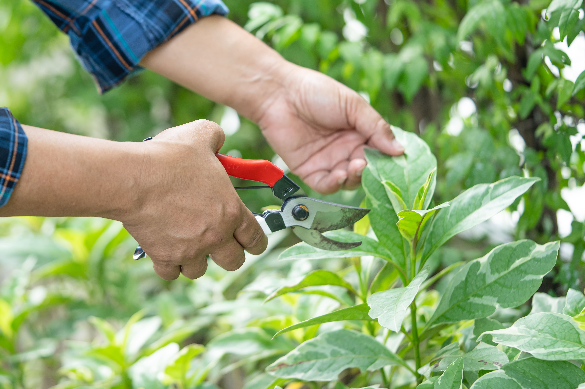

We'd be happy to share our expertise and explore potential solutions to address your
inquiries.
LET'S EMBARK ON YOUR DREAM PROJECT
From Hack To Horticulture Hero: Your Guide To Pruning Plants
O VERCARDO VERCARDO VERCARDO
Unveiling the Elegance of Deadheading: Elevating Your Garden's Splendor

In the realm of garden care, one timeless technique stands out as the quintessential artistry behind perpetuating the beauty of flowering plants: deadheading. Delve into this all-encompassing guide tailored for the discerning gardener, where we unravel the intricacies of deadheading to unveil the secrets of cultivating an enduring tapestry of blooms within your garden sanctuary.
The Artistry of Deadheading
At its core, deadheading epitomizes the finesse of pruning, a delicate choreography wherein spent flowers and seed heads are meticulously removed. Yet, its significance transcends mere aesthetics, encompassing a realm where the preservation of floral opulence meets the nurturing of plant vitality.
Deciphering the Enigma
Why does deadheading hold such sway over the vitality of flowering plants? As blossoms wane, they continue to siphon energy from the plant for seed production. By delicately excising these spent blooms, we redirect the plant's focus towards fostering new growth and nurturing the promise of forthcoming blooms.
A Symphony of Technique
The practice of deadheading unfolds with an elegance akin to a ballet. As each bloom fades, a gentle pinch or precise cut severs the spent flower stem just below the blossom, above the threshold of healthy foliage. Though typically performed stem by stem, certain botanical specimens lend themselves to a more sweeping approach, such as the elegant French Lavender, where shearing off spent blooms above the foliage fosters rejuvenation without compromising leaf abundance.
Navigating the Botanical Tapestry
Yet, amidst this choreographed ballet of botanical care, a question arises: which plants merit the tender touch of deadheading? The answer, alas, eludes simplicity, for each floral denizen boasts its own narrative. However, amidst this floral mosaic, modern plant breeding has ushered forth cultivars endowed with a self-sustaining grace, obviating the need for intervention. These "self-cleaning" marvels, with blooms that gracefully fade into obscurity, epitomize nature's ingenuity in perpetuating beauty without human intervention.
DO VERCARDO VERCARDO VERCARDO
A Symphony of Exceptions
Indeed, amidst the verdant expanse of our garden canvas, exceptions abound. Some botanical treasures, with their showy berries and resplendent fruits, beckon us to relinquish the shears and revel in the bounty of nature's design. Others, in their ephemeral bloom, whisper tales of singular splendor, where the act of deadheading serves not to prolong the floral display, but rather to nurture the plant's intrinsic vitality.
Embracing the Journey
Yet, amidst this labyrinth of botanical nuances, a resounding truth emerges: deadheading, when approached with care and curiosity, bears no ill will upon our verdant companions. So, let curiosity be your guide, and dare to embark upon this botanical odyssey. For in the garden's embrace, every snip, every whisper of the shears, unveils a narrative of renewal and splendor.
An Ode to Gardening Serenity
And finally, let us dispel the notion that deadheading is a mandate rather than a choice. For in the garden's embrace, one finds solace and sanctuary, a respite from the burdens of obligation. If the act of deadheading feels more a chore than a cherished ritual, fear not, for the garden's grace extends beyond the confines of our shears. So, tend to your garden with a heart attuned to its rhythms, knowing that whether pruned or left to flourish, its beauty endures, an ever-unfolding testament to nature's artistry.
COLLABORATE WITH VERCARDO – BRING YOUR VISION TO LIFE
We're passionate about transforming ideas into thriving landscapes, functional buildings, and flourishing horticultural spaces. We don't just offer services; we become your trusted advisor, sharing insights, suggesting creative options, and answering your questions every step of the way.